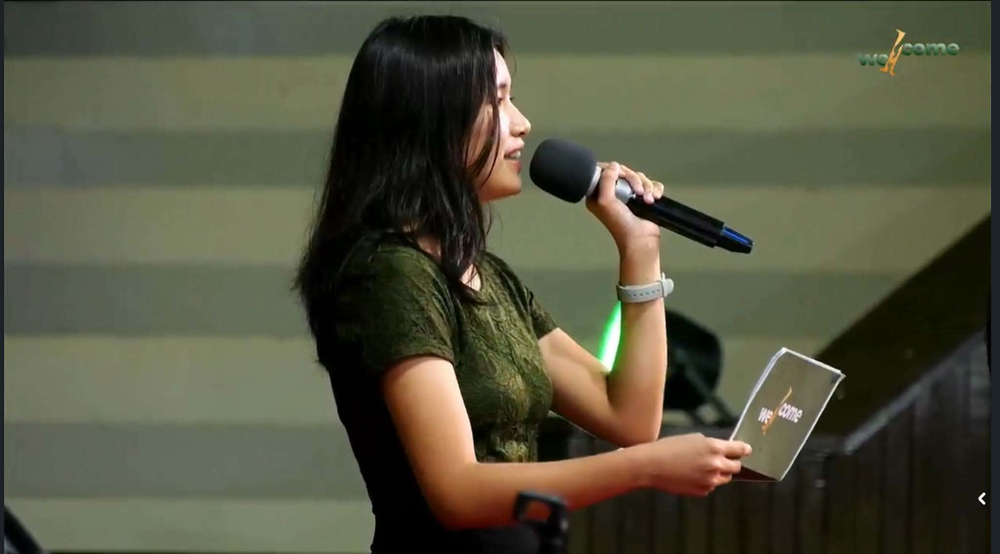

At Whizdoo, our mission is simple — turn complicated lessons into Aha! moments your child will never forget. We believe in starting with the basics and building up, because every strong learner begins with a strong foundation.
No matter how tricky the subject — Math, Science, English, History, or Filipino — we'll break it down in ways that make sense to your child. We're here to connect, laugh, challenge, cheer on, and create moments they'll carry for life.
Not just academically — but practically and personally. Where kids apply what they learn, build real confidence, and grow into future-ready thinkers who aren't afraid to ask, wonder, and explore.
We want to be remembered as the team who sparked their love for learning, made them laugh while solving math, and helped them believe in themselves when others didn't.
"Learning should be an adventure, not a punishment."
Our core belief"We don't want students to remember formulas — we want them to remember us."
Our promise"Kids think like adults — they just don't always get the chance to be heard."
Why we started
Elisha Terrazola
Teacher Eli grew up believing that "ang bata ay pag-asa ng bayan" isn't just a quote — it's a mission. With both a heart for education and a gift for making learning feel light and fun, she set out to create something different.
When she started really listening to students — hearing what makes them curious, what confuses them, what they dream about — she realized something powerful: kids think like adults. They just don't always get the chance to be heard.
And so, Whizdoo was born. From the word "Wisdom" — with the mission to grow wise, confident, and curious young learners.
"I don't just want to teach. I want every child to walk away feeling seen, heard, and believed in."